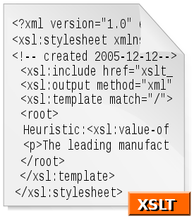

7.- Documentación de una clase
Caso práctico

Ada está mostrando a Juan la documentación sobre una serie de métodos estándar que van a necesitar para completar el desarrollo de una parte de la aplicación. Esta documentación tiene un formato estructurado y puede accederse a ella a través del navegador web.
-¡Qué útil y fácil está siendo el acceso a esta documentación! La verdad es que los que la han generado se lo han currado bastante. Generar esta documentación se llevará mucho tiempo, ¿verdad, Ada? -pregunta Juan mientras recoge de la impresora la documentación impresa.
Ada prepara rápidamente una clase en blanco y comienza a incorporarle una serie de comentarios:
-Verás, Juan, documentar el código es vital y si incorporas a tu código fuente unos comentarios en el formato que te voy a mostrar, la documentación puede ser generada automáticamente a través de la herramienta Javadoc. Observa -responde Ada.
Reflexiona
Una vez que ya tenemos nuestra clase implementada con todos sus miembros, nos queda una cuestión de gran importancia: la documentación de la clase. Del mismo modo que nosotros hemos podido hacer uso de la documentación javadoc de todas las clases de la API de Java y de esa manera hemos podido consultar cómo funcionan determinados métodos, qué parámetros pueden recibir, qué valores devuelven, qué posibles excepciones pueden saltar, etc. ahora nos toca a nosotros proporcionar una documentación similar a quienes pudieran utilizar en el futuro nuestras clases.
Piensa en las siguientes cuestiones:
- ¿Quién crees que accederá a la documentación de la clase?
- ¿Qué debemos incluir en la documentación de una clase?
La documentación de las clases que se proporciona junto con la API de Java en el JDK ha sido generada con una herramienta llamada Javadoc. Nosotros también podremos generar la documentación de nuestras clases a través de dicha herramienta.
Si desde el principio nos acostumbramos a documentar el funcionamiento de nuestras clases desde el propio código fuente, estaremos facilitando la generación de la futura documentación de nuestras aplicaciones. ¿Cómo lo logramos? A través de una serie de comentarios especiales, llamados comentarios de documentación que serán tomados por Javadoc para generar una serie de archivos HTML que permitirán posteriormente, navegar por nuestra documentación con cualquier navegador web.
Los comentarios de documentación o comentarios "javadoc" tienen una marca de comienzo (/**) y una marca de fin (*/). En su interior podremos encontrar dos partes diferenciadas: una para realizar una descripción y otra en la que encontraremos más etiquetas de documentación. Veamos un ejemplo:
/**
* Descripción principal (texto/HTML)
*
* Etiquetas (texto/HTML)
*/
Este es el formato general de un comentario de documentación. Comenzamos con la marca de comienzo en una línea. Cada línea de comentario comenzará con un asterisco. El final del comentario de documentación deberá incorporar la marca de fin. Las dos partes diferenciadas de este comentario son:
- Zona de descripción: es aquella en la que el programador escribe un comentario sobre la clase, atributo, constructor o método que se vaya a codificar bajo el comentario. Se puede incluir la cantidad de texto que se necesite, pudiendo añadir etiquetas HTML que formateen el texto escrito y así ofrecer una visualización mejorada al generar la documentación mediante
Javadoc. - Zona de etiquetas: en esta parte se colocará un conjunto de etiquetas de documentación a las que se asocian textos. Cada etiqueta tendrá un significado especial y aparecerán en lugares determinados de la documentación, una vez haya sido generada.
Aquí tienes un ejemplo de comentario de la documentación de un método:
/**
* Obtiene el saldo actual de la cuenta
*
* @return saldo actual de la cuenta
*/
public double getSaldo() {